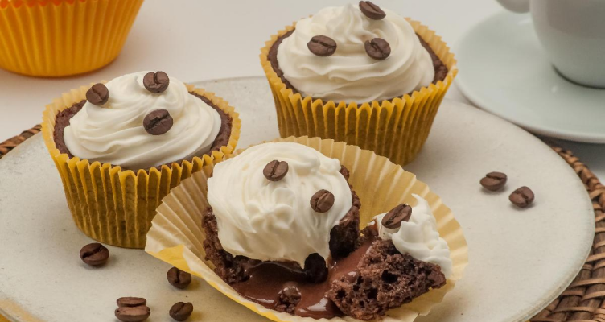

Cupcake de café com chantilly
O bolinho perfeito para acompanhar o café de todos os dias. É muito fácil e ainda por cima fica maravilhoso, com certeza vai impressionar. Faz e depois me conta o que achou!
Tempo: 1h10
Rendimento: 12 porções
Dificuldade: fácil